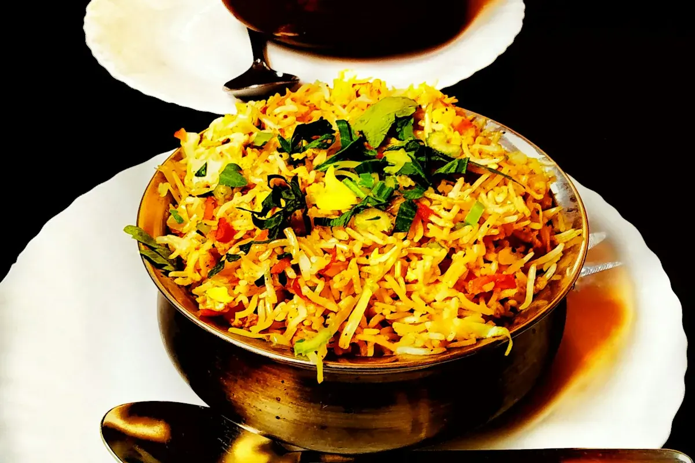

The Pantry Staples That Make Weeknight Cooking Possible

A well-stocked cupboard is not a long list of ingredients. It is a short list you actually use, kept where you can see it, and replaced before it runs out.
Start with fat, salt and acid
Most bland home cooking is not missing an ingredient. It is missing one of three things: enough salt, enough fat, or something sharp to finish with. If those three are always in the cupboard, a plate of vegetables and a pot of rice can be made to taste like a decision rather than an accident.
Keep one neutral oil for cooking and one good olive oil for finishing. They do different jobs: the neutral oil takes high heat without turning bitter, and the olive oil carries flavour that disappears when it is overheated. Salt in a jar you can pinch from is worth more than a shaker, because you will use it more freely. For acid, lemons, a vinegar you like, and a jar of something pickled cover almost everything.
If you are starting from nothing, buy in this order: salt, a neutral oil, olive oil, tinned tomatoes, dried pasta, rice, onions, garlic, and a vinegar. That set will produce a decent dinner tonight, and every addition after it makes the range wider rather than just filling a shelf.
The tinned shelf
Tinned tomatoes, chickpeas, beans and coconut milk will make a meal with nothing else added. Buy tomatoes whole rather than chopped if you can: they are usually better quality fruit, and crushing them by hand takes seconds and gives a better texture in a sauce.
Coconut milk separates in the tin, so shake it hard before opening or spoon the thick part off the top and stir it back in. Beans and chickpeas benefit from being rinsed, which removes the starchy liquid that makes a pan taste flat and foamy.
Dry goods that earn their space
Pasta in two shapes, rice, and something with more chew such as farro or barley cover the starch side of most dinners. Keep them in sealed jars rather than the bags they came in, partly so you can see how much is left and partly because it keeps weevils out of the cupboard.
Spices are where most kitchens go wrong. A dozen jars you use are worth more than thirty you do not, because ground spices lose their punch within a year of opening. Buy small quantities, write the month on the lid, and replace the ones that smell of dust when you open them.
Store nuts, seeds and whole grains in the fridge if you have space. They contain oils that go rancid at room temperature, and a bag of walnuts that has been open since last winter will taste of paint. The same goes for wholemeal flour, which turns bitter far faster than white.
Aromatics, and the freezer as an extension of the pantry
Onions, garlic and ginger are the base of most of the cooking on this site, and all three keep well. Garlic and ginger freeze beautifully: grate them while frozen, straight into the pan, and you skip the peeling and the sticky fingers.
The freezer is where a pantry quietly doubles in size. Frozen peas, spinach and sweetcorn are picked and frozen quickly, so they are often better than the fresh versions out of season. Bread frozen in slices means toast without a trip to the shop, and a bag of parsley or coriander chopped and frozen keeps for months.
What not to stock
Anything bought for one recipe that you will not use again is not a staple, it is clutter. Specialty vinegars, single-use spice blends and jars of things you do not quite like take up the space that the useful ingredients need, and they make the cupboard harder to read at seven in the evening.
The other thing to skip is the giant bag. Buying four kilos of something because it is cheaper per kilo only works if you finish it. Food thrown away is the most expensive food in the kitchen, and it is the one cost that never appears on a receipt.
A rotation that actually works
Rather than stocking once and hoping, keep a short list of the six or seven meals you make most often and stock for those. If pasta with garlic and oil, a tray of roasted vegetables, rice with eggs, and a pot of beans are in regular rotation, then the ingredients for them are the pantry.
Restock on a schedule rather than in a panic. A note on the phone that grows through the week, taken to the shop once, is enough. The aim is to open the cupboard on a Tuesday and find that dinner is already ninety per cent there.
The five-minute cupboard audit
Once a month, take everything out of the spice shelf and smell each jar. Anything that smells of dust, cardboard or nothing at all goes. Do the same with opened bags of flour and rice, checking for weevils or clumping, and with any jar whose lid has gone sticky or whose contents have darkened.
It sounds fussy and takes less time than reading a recipe. The payoff is that when you reach for cumin on a Tuesday, you know it will taste of cumin, so you use it with confidence rather than adding twice as much to compensate for a flavour that is not there.
Written by Kent B Williams for Hearth & Harvest. Questions or corrections are welcome at the contact page.